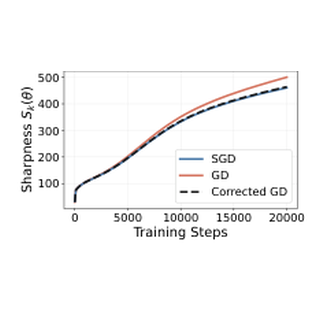
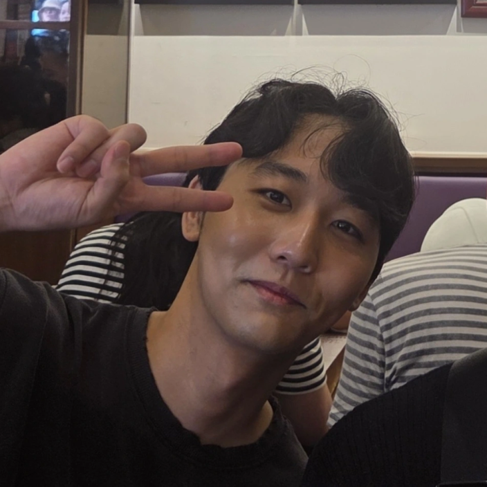
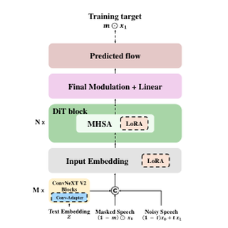

Mini-batch Noise Lowers Sharpness via Dominant-Subspace Fluctuations
ICML 2026 Workshop on High-dimensional Learning Dynamics (HiLD)
Hi! I am a fourth-year undergraduate student in the Department of Mathematics at Ajou University in Suwon, South Korea.

I study the dynamics of optimization in deep learning, aiming to connect theoretical analysis with practical training. In particular, I focus on understanding how the noise in mini-batch gradients and the update rule influence training behavior (e.g., implicit bias, sharpness, and the edge of stability).

ICML 2026 Workshop on High-dimensional Learning Dynamics (HiLD)
NeurIPS 2025 Datasets and Benchmarks
paper / PDF / project page / code

Interspeech 2025 (Oral)
paper / PDF / project page
Ajou University,
Suwon, South Korea
B.S., Department of Mathematics,
Mar. 2021 - Present
GPA: 4.33 / 4.50 (top 2.5%)